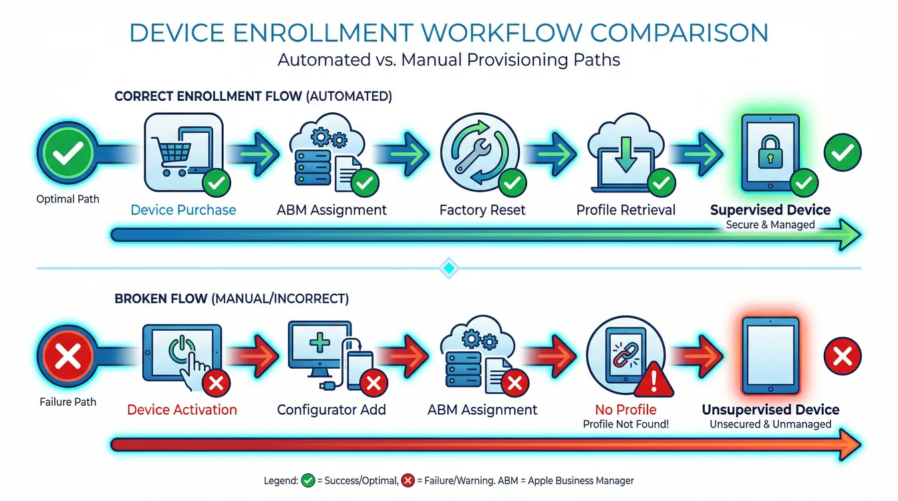
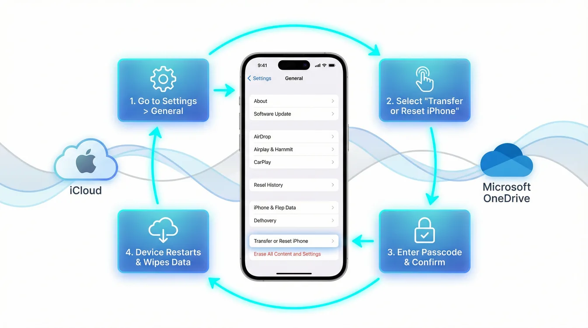

CxO Summary: Why This Matters for Your Organization
An iOS ABM enrollment that shows "Not Contacted" in Intune means the device never completed its check-in with Apple's Device Enrollment Program servers — and every security policy you configured is sitting idle. When corporate iOS or iPadOS devices fail to enroll properly via Apple Business Manager and Microsoft Intune, the organization faces compliance gaps, data exposure, and hours of wasted IT effort. This article explains the root cause and the fix.
Business Impact
- Security Gaps: Unsupervised devices cannot enforce critical security policies, such as mandatory encryption, app restrictions, and data loss prevention, leaving corporate data vulnerable.
- Compliance Risks: Devices showing a "Not Contacted" status are not managed, leading to audit failures for frameworks like the CIS Benchmark, NIST 800-171, or GDPR Article 32.
- Operational Overhead: IT teams waste valuable hours troubleshooting individual enrollment issues instead of focusing on strategic initiatives.
- User Productivity Loss: Employees cannot access corporate resources like email, apps, and files until their device enrollment is successfully resolved.
Risk Mitigation Value
Proper ABM enrollment with device supervision is a cornerstone of a modern, secure endpoint strategy. It enables:
- Conditional Access Enforcement: Ensures that only compliant devices can access Microsoft 365, SharePoint, and other corporate applications.
- Zero Trust Alignment: Makes device health attestation a key part of your identity and access control strategy.
- Automated Compliance: Policies are deployed automatically, reducing human error and ensuring consistent security posture.
ROI Context
The return on investment is clear. Manual troubleshooting for a single device can take 2-4 hours of an IT administrator's time. A properly configured automated ABM setup takes approximately 15 minutes per device. For a fleet of 100 devices, this translates to 200-400 hours of saved IT labor.
The Problem: Symptoms and Initial Observations
When an iOS/iPadOS device fails to enroll correctly through ABM, the symptoms in the Microsoft Intune admin center are consistent and clear. The device appears, but it remains in a non-functional, unmanaged state.
What You See in Intune
Navigating to Devices > iOS/iPadOS > [Device Name], you'll observe the following properties:
| Property | Observed Value | Expected Value |
|---|---|---|
| Status | Not contacted | Managed / Compliant |
| Last contacted | Never | Recent timestamp |
| Supervised | No | Yes |
| Enrollment type | Empty or "User Enrollment" | "Automated Device Enrollment" |
| Management state | Unmanaged | Managed |
Critical Observation
Despite verifying that the enrollment profile in Intune is correctly configured and assigned, the device never retrieves this profile during the Setup Assistant. This is the central clue to understanding the root cause.
Root Cause: How Post-Activation Enrollment Breaks the Flow
The issue stems from a fundamental misunderstanding of how Apple's Automated Device Enrollment (formerly DEP) works. The problem is not with Intune or ABM, but with the sequence of events during the device's initial activation.

The Critical Sequence Problem
Here's what typically happened:
- The device was activated and set up before being added to Apple Business Manager.
- After activation, Apple Configurator was used to manually add the device to ABM.
- The device was then correctly assigned to the Intune MDM server in ABM and synced.
- The user attempts to enroll, but the device bypasses the mandatory ABM enrollment profile.
Why This Breaks Enrollment
Apple's enrollment logic is tied to the device's very first boot sequence:
- When a new (or factory-reset) device connects to Wi-Fi, it contacts Apple's activation servers.
- It checks its serial number against the ABM database.
- If found and assigned to an MDM server, it is forced to download the enrollment profile, applying supervision and management settings.
- If not found (or if already activated), it skips this check and proceeds with a standard consumer setup. No supervision is applied.
When you add a device to ABM with Apple Configurator after it has been activated, the device's activation record is already "sealed" on Apple's servers. It will not re-check for an ABM profile on subsequent reboots. A factory reset is the only way to force this check to happen again.
The Solution: Factory Reset and Re-Enrollment
To fix this, you must guide the device back to its initial, out-of-the-box state, allowing it to correctly perform the ABM check.

Prerequisites (Critical - Do NOT Skip)
Before you begin, ensure the following:
- User Data Backup: Instruct the user to back up all important data to iCloud or a computer.
- Intune Configuration Verified: Double-check that the enrollment profile is assigned to the device in Intune and that the ABM token has recently synced.
- ABM Assignment Verified: Confirm in the ABM portal that the device is assigned to your Intune MDM server, not "Apple Configurator."
Step-by-Step Resolution
- Prepare Intune: Manually sync your ABM token in Intune (Devices > iOS/iPadOS enrollment > Enrollment program tokens > Sync) and verify the device has the correct profile assigned.
- Factory Reset the Device: On the iOS/iPadOS device, go to Settings > General > Transfer or Reset > Erase All Content and Settings. This is non-negotiable; a simple settings reset will not work.
- Re-run Setup Assistant: Proceed through the initial setup screens (Language, Region). When you connect to Wi-Fi, the device will contact Apple's servers.
- The Critical Moment: The "Remote Management" screen will appear, indicating that the device has successfully found its assignment in ABM. Proceed with the on-screen instructions to authenticate with Microsoft Entra ID.
- Verify Success: Once setup is complete, check the device's status in Intune. It should now show as Supervised and Managed, with a recent contact time.

Prevention: Avoiding This Issue in the Future
Fixing the problem is good, but preventing it is better. Implement these best practices to ensure a smooth, zero-touch enrollment experience from day one.

Best Practice 1: Procure Devices Through Authorized Channels
- Always purchase devices from Apple or an Apple Authorized Reseller.
- Provide your Apple Customer Number or Reseller ID at the time of purchase.
- This ensures devices are automatically added to your ABM account before they are shipped, making them ready for zero-touch enrollment out of the box.
Best Practice 2: Establish a Clear Device Procurement Policy
Create a formal policy that prohibits employees from purchasing corporate devices from retail stores. Enforce this through your expense policies and asset management procedures.
Best Practice 3: Use Intune Enrollment Restrictions and Conditional Access
- Configure Enrollment Restrictions in Intune to block personally owned iOS/iPadOS devices from enrolling.
- Implement a Conditional Access policy that requires devices to be marked as compliant before they can access corporate resources. This provides a powerful business justification for enforcing proper enrollment procedures.
Complex IT? I make it simple – with M365, which protects, scales, and brings clarity. For SMEs that rely on smart solutions.
Once your iOS fleet enrolls cleanly, pair it with Intune enrollment restrictions to block personal devices from the management plane, and protect corporate data on BYOD phones with Intune MAM policies.
Frequently Asked Questions
Why does my iOS device show "Not Contacted" in Intune?
The device was added to Apple Business Manager after its initial activation. iOS only checks for a DEP enrollment profile during the first Setup Assistant run. If the device was already set up before ABM assignment, it will never contact Intune until you perform a full factory reset and let it go through Setup Assistant again.
Can I fix the Not Contacted status without a factory reset?
No. A factory reset (Erase All Content and Settings) is the only reliable way to trigger the DEP check-in. Apple Configurator can re-enroll a device in supervised mode, but it also requires a wipe. There is no over-the-air workaround that preserves user data.
How do I prevent this issue in future device purchases?
Purchase all iOS devices through an Apple Authorized Reseller linked to your Apple Business Manager account. Provide your Apple Customer Number at the point of sale so the devices are automatically assigned to your ABM organization before they ship. Never allow employees to purchase corporate devices from retail stores.
Get Expert Help
Need help streamlining your iOS device management, setting up ABM, or troubleshooting complex Intune issues? Visit easym365.de for expert consulting and hands-on support.